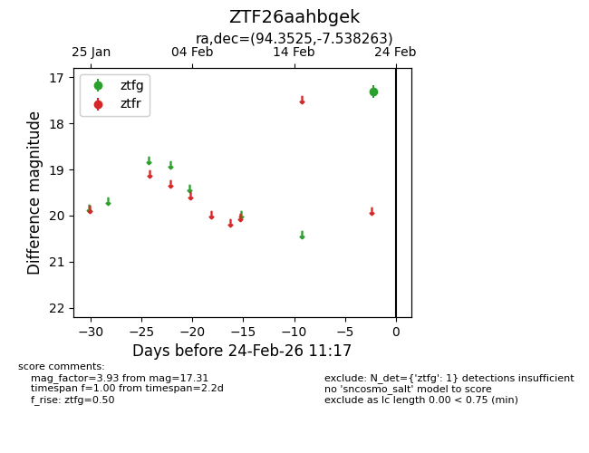
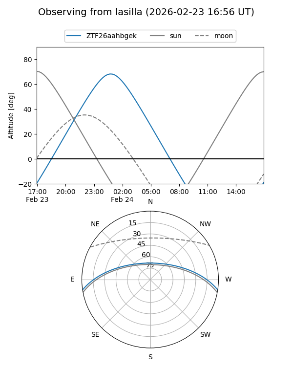
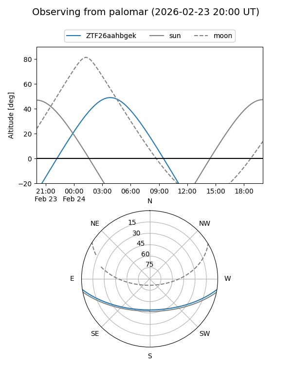

ZTF26aahbgek
Target ZTF26aahbgek at 2026-02-24 11:19
Aliases and brokers:
FINK: link
Lasair: link
ALeRCE: link
alt names
ZTF26aahbgek (ztf,fink_ztf)
Coordinates:
equatorial (ra, dec) = 94.3525,-7.53826
equatorial (HMS+DMS) = 06:17:24.59,-07:32:17.75
galactic (l, b) = (215.8446,-10.97253)
Flags:
Photometry:
last ztfg=17.31
1 ztfg detections
Lightcurve

Visibility


Additional plots